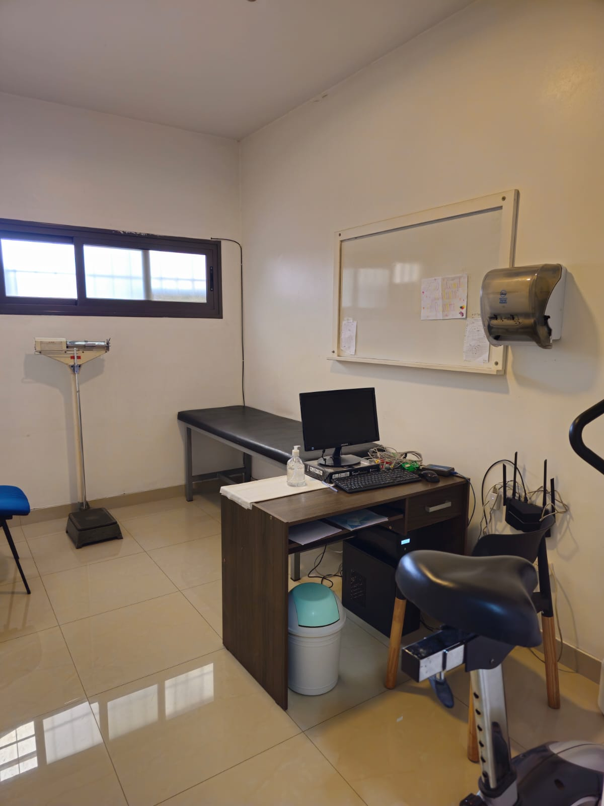

Exámenes Preocupacionales
Evaluamos la salud física y mental del candidato en relación al puesto. Garantizamos idoneidad y seguridad desde el día uno.
+10 años pensando siempre en la salud de tu empresa.
Informes digitalizados disponibles online desde su empresa.
+10 especialidades bajo un mismo techo en Mendoza.
Autorización para libretas sanitarias en toda la provincia.
Gestión completa: desde el turno hasta la entrega del resultado.
Diseñamos programas personalizados adaptados a las necesidades específicas de cada empresa.
Evaluamos la salud física y mental del candidato en relación al puesto. Garantizamos idoneidad y seguridad desde el día uno.

Programas por riesgo y puesto para cumplir normativa y detectar desvíos de salud a tiempo.

5 tests especializados: Atención Concentrada, Discriminativa, Velocidad de Anticipación, Toma de Decisiones y Coordinación.

Evaluación médica presencial y verificación domiciliaria de licencias. Determinamos capacidad laboral real.

Mediciones de ruido, iluminación y puesta a tierra. Asesoramiento P.E.S.E. Resolución 363/2016.

Certificados para actividades recreativas y competitivas. ECG, ergometría y evaluación cardiológica completa.

Examen completo: clínico, laboratorio, audiometría, ECG, EEG, oftalmología y psicotécnico.

Autorización oficial para emisión de libretas sanitarias con cobertura en toda la provincia de Mendoza.
Contamos con profesionales de más de 15 especialidades para una atención integral del trabajador.
Evaluación clínica general del trabajador para determinar aptitud al puesto.
Análisis de sangre y orina para detección de patologías y control preventivo.
Estudio del corazón mediante ECG y evaluación cardiológica completa.
Diagnóstico radiológico del sistema osteoarticular y torácico.
Evaluación del equilibrio emocional y aptitud conductual para el trabajo.
Estudio del sistema nervioso mediante EEG y evaluación neurológica.
Tests de atención, memoria y velocidad de reacción psicomotriz.
Evaluación de la salud mental y estabilidad emocional del trabajador.
Ecografías y estudios de imagen para diagnóstico clínico preciso.
Control de agudeza visual y capacidad ocular para cada puesto de trabajo.
Evaluación de la capacidad auditiva y comunicativa del trabajador.
Registro de la actividad eléctrica del corazón en reposo y esfuerzo.
Prueba de esfuerzo cardiovascular para evaluar aptitud física y cardíaca.
Medición de la capacidad pulmonar y función respiratoria del trabajador.
Evaluación auditiva para puestos con exposición continua al ruido laboral.
Registro de actividad cerebral eléctrica para diagnóstico neurológico.

Somos un equipo de profesionales altamente capacitados y apasionados por la medicina laboral. Contamos con profesionales de distintas especialidades y hemos colaborado con diversas industrias para promover la salud y bienestar de sus empleados.
Trabajamos en estrecha colaboración con las empresas para comprender sus necesidades específicas y ofrecer soluciones adaptadas a sus requerimientos. Nuestra misión: prevenir enfermedades, reducir accidentes laborales y mejorar la calidad de vida del trabajador.
Contactar ahora →El servicio de Alta Salud es excelente. Destacamos la agilidad y predisposición del equipo, que facilita cada gestión de exámenes. La entrega digital de resultados en 24/48hs marca una diferencia real.
Desde que trabajamos con Alta Salud el proceso de exámenes preocupacionales es mucho más ágil. El equipo responde rápido y los resultados digitales agilizan nuestros procesos de incorporación.
La atención personalizada y la calidez humana del equipo hacen la diferencia. Muy conforme con la plataforma y los tiempos de entrega. Los recomendamos sin dudarlo.
Respondemos en menos de 24 horas hábiles.